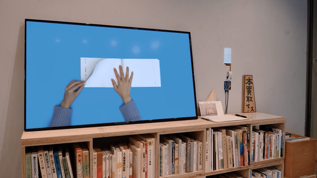

JPめくる映像 実験 02(じわじわと本をめくる実験)
ENTurning over Pages in the Monitor#2
伊東 友子 ＋ 時里 充 / Tomoko Ito + Mitsuru Tokisato
2018

人が本を読む時、読者は書かれた文字の流れを一直線に前進していきますが、たとえば一つの物語に夢中で入り込んでいる時、本の周囲や中にひろがる空間を感じることがあります。行間のあいだ。本のむこう。ページのあいだ。しかし一冊の紙の本の中においてページの単位というのは、強い拘束力を持つルールです。ページのサイズ、枚数、裏表。すべての単位は規則的です。
実験02では、一定のページのめくり方をすることで文章が生成されます。めくり方を知らないと、つまり誰かがめくっているのを俯瞰している映像でなければ、この本に書かれる文章のすべては読めないのです。文章は文字の行、ページの進行とは同じに進みませんが、ページをめくらないことには文章は生まれません。
実験02における「ページをめくる」動作は、「読む」という行為のために行われるのではなく、文章を「書く」「つくりだす」「選択する」という行為に近いといえます。めくり方の行為それ自体が、言葉と同列に作用します。